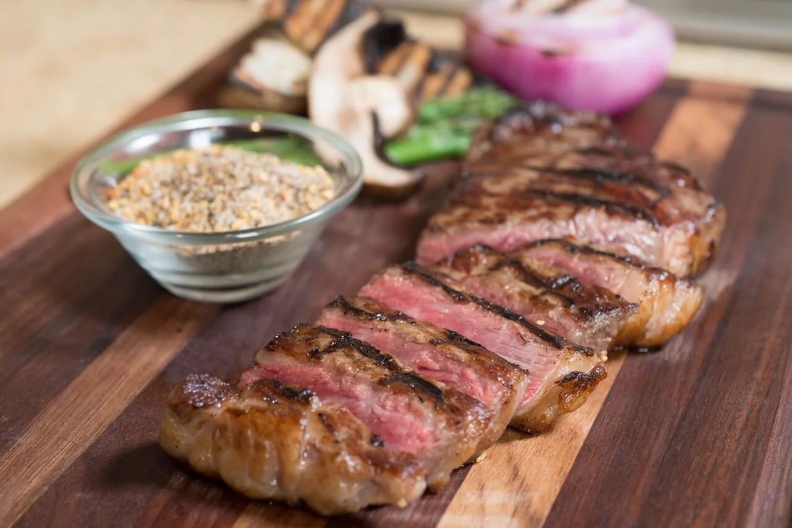

Steak

Description
A perfectly cooked medium rare steak.
Ingredients
- Steak
- Butter
- Oil
- Salt
- Garlic
- Rosemary
- Thyme
Preparation
- Pat steaks dry and liberally season with salt
- In a cast iron skillet, heat 1 tablespoon of olive oil over medium-high heat
- Once hot, transfer steaks onto skillet. Sear each side for 3-4 minutes. Afterwards, use tongs to sear the edges for 1-2 minutes.
- Reduce heat to medium, and add in the butter, garlic, and herbs.
- Continously spoon the butter sauce until the steak is about 10 degrees away from the desired temperature.